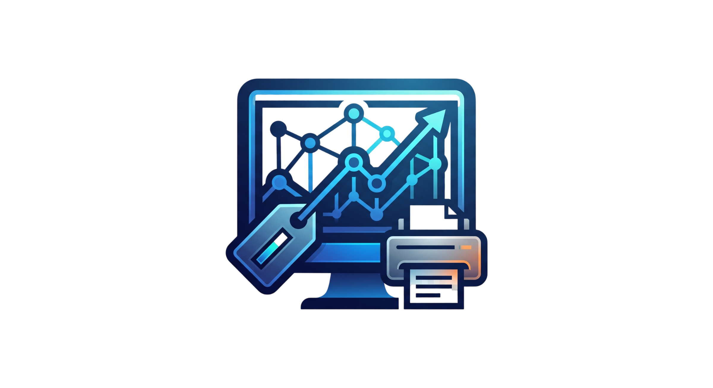

Teknik servis fişlerinden toner sayaç takibine, BitLocker kurtarma anahtarı kasasından periyodik bakım protokollerine kadar tüm kurumsal IT hareketlerinizi tek çatı altında toplayın.

Teknik servisten lojistiğe, şifreli anahtar kasasından takvime kadar kurumsal bilgi işlem ekiplerinin ihtiyaç duyduğu tüm araçlar tek ekranda.
Seri no veya barkod ile hızlı kabul, Snipe-IT zimmetli cihaz otomatik eşleme, onarım aşamaları (*Yeni, Parça Bekliyor, Dış Servis, Teslim Edildi*) ve ıslak imzalı PDF çıktısı.
Model, renk ve kritik eşik bazında toner stokları. Yazıcı ve personel bazında çıkış logları, sayaç (sayfa sayısı) kayıtları ve otomatik kritik stok uyarıları.
Servis fişleri, kargo sevkiyatları, toner değişimleri ve periyodik bakımların tek ekranda renk kodlarıyla canlı takibi. Slide-in günlük operasyon raporu paneli.
Gelen ve giden kargoların kurye, takip no, irsaliye ve alıcı bilgileriyle kaydı. Cihaz ve fiş ilişkilendirme, termal yazıcılar için tek tıkla standart barkodlu kargo etiketi.
Kurumsal bilgisayarların BitLocker kurtarma anahtarları (Recovery Key) ve Key ID kayıtları. TXT/PDF dosya ekleri, şifreli metin yedekleri ve tek tıkla panoya kopyalama.
Bir personelin üzerine kayıtlı tüm donanım ve yazılımlar tek ekranda: Snipe-IT zimmetleri, geçmiş servis fişleri, toner teslimatları ve kargo logları.
İşletme bazlı planlama, 9 zorunlu kontrol adımı (toz temizliği, fan, portlar, antivirüs, lisans vb.) ve İşletme Müdürü ile Teknisyen imzalı resmi teslim-tesellüm tutanağı.
Sağ alt köşeye sıfır oturan modern masaüstü sohbet barı. IT personeli arasında anlık mesajlaşma (Socket.IO) ve Snipe-IT envanterini doğal dil ile tarayabilen akıllı operasyon asistanı.
Masaüstü VAPID Web Push bildirimleri ile yeni arıza veya kargo geldiğinde anında haberdar olun. Cyberpunk, Sakura, Aurora, Dark gibi 15+ zengin görsel tema desteği.
Tek bir Linux veya Windows sunucuda 5 basit komut ile kuruluma hazır.
admin / Şifre: admin123